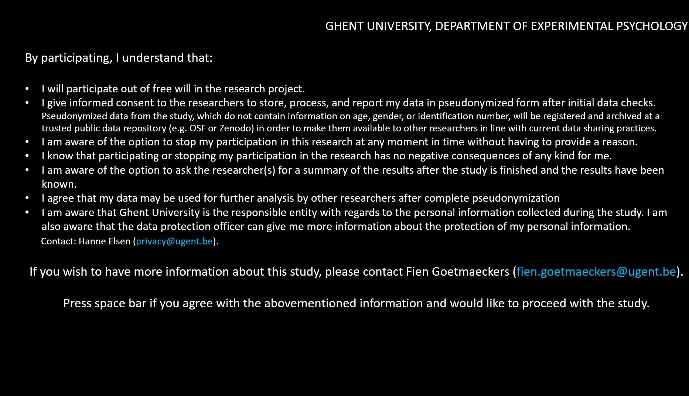
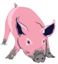
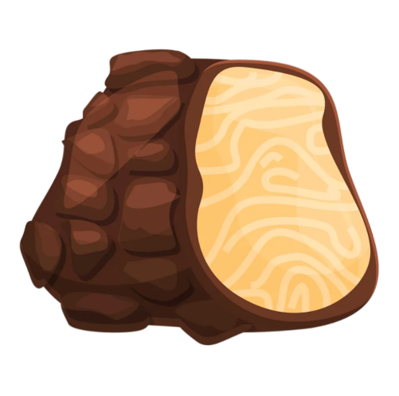
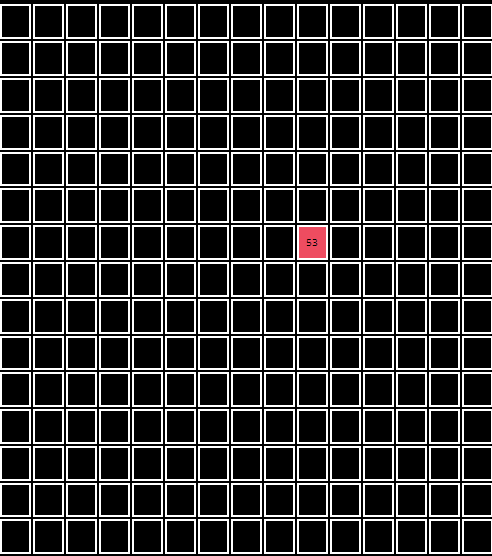
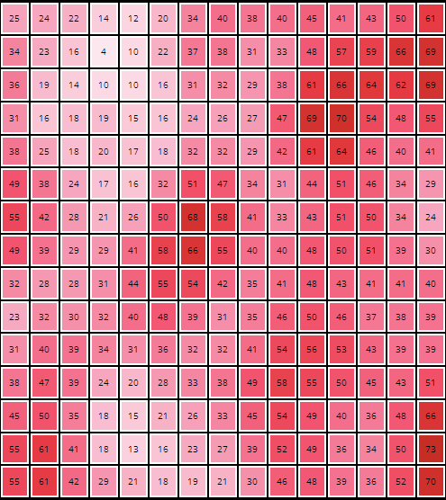
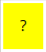
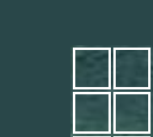
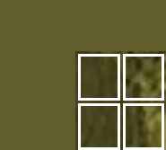

<!DOCTYPE html>
<html lang="en">
  <head>
    <meta charset="utf-8">
    <meta http-equiv="X-UA-Compatible" content="IE=edge">
    <meta name="viewport" content="width=device-width, initial-scale=1.0">
    <meta name="description" content="">
    <meta name="author" content="Fien Goetmaeckers (based on work by Charley Wu)">
    <meta charset="utf-8">
    <title>The truffle search game</title>
    <script src="jspsych/jspsych.js"></script>

    <script src="jspsych/plugin-html-keyboard-response.js"></script> <!--to answer with keyboard-->
    <script src="jspsych/plugin-html-button-response.js"></script> <!-- to answer by pressing buttons-->
    <script src="jspsych/plugin-survey-multi-choice.js"></script><!-- to offer mc questions-->
    <script src="jspsych/plugin-image-keyboard-response.js"></script> <!--too include images-->
    <script src="jspsych/plugin-survey-html-form.js"></script>
    <script src="jspsych/plugin-html-slider-response.js"></script>
    <script src="jspsych/plugin-html-mouse-response.js"></script> <!-- developed by Zhang Cheng-->
    <script src="jspsych/plugin-survey-text.js"></script>
    <script src="jspsych/plugin-call-function.js"></script>
    <script src="jspsych/plugin-preload.js"></script>  <!--to load images at the start of exp-->
    <script src="jspsych/plugin-html-slider-response-nostart.js"></script> <!-- developed by mmwozniak-->
    <link href="jspsych/jspsych_extra.css rel=stylesheet" type="text/css"/><!-- developed by mmwozniak-->


    <script src="grid_file.js"></script> <!-- the reward distributions-->
    <script src="scenario_file.js"></script> <!-- the test round scenarios-->
    <link href="jspsych/jspsych.css" rel="stylesheet" type="text/css" />
    <link rel="stylesheet" type="text/css" href="grid2D.css">

    <script src="jspsych/plugin-browser-check.js"></script>
    <script src="jspsych/plugin-fullscreen.js"></script>

</head>
<body></body>
<script>
    var test = true;
    var jsPsych = initJsPsych();
    var timeline = [];

     /*************************************
    participant enters: register and assign condition
    **************************************/

    //subject ID's
    jsPsych.data.addProperties({subjectID: 'testsubject', prolificID: 'testid'})
    jsPsych.data.addProperties({assigned_condition: 3}) //for the real experiment, this was counterbalanced and randomized


    // test browser: only chrome allowed (and not on mobile device)
    var browser_test = {
        type: jsPsychBrowserCheck,
        inclusion_function: function (data) {
            return data.browser == 'chrome' && data.mobile === false
        },
        exclusion_message: function (data) {
            if (data.mobile) {document.querySelector('body').innerHTML = '<p style="color:white">You must use a desktop/laptop computer to participate in this experiment.</p>'}
            else if (data.browser !== 'chrome') {document.querySelector('body').innerHTML = '<p style="color:white">You must use Chrome as your browser to complete this experiment.</p>'}
        }
    }

    timeline.push(browser_test) 


     /*************************************
    instruction pages
    **************************************/

    var preload = {
        type: jsPsychPreload,
        auto_preload: true,
        show_detailed_errors: true
    }
    timeline.push(preload)
    // welcome
    var welcome = {
        type: jsPsychHtmlKeyboardResponse,
        choices: " ",
        stimulus: "<p> Welcome! Press space to start! </p>"
    }
    timeline.push(welcome)   

    // fullscreen: change screen to fullscreen
    var fullscreen = {
        type: jsPsychFullscreen,
        fullscreen_mode: true
    }
    timeline.push(fullscreen)

    var consent = {
        type: jsPsychHtmlKeyboardResponse,
        stimulus: `<\img>
        `,
        choices: " "
    }
    timeline.push(consent)

    var instructions1 = {
        type: jsPsychHtmlButtonResponse,
        stimulus: `
            <h3>Instructions:</h3>
            <p><b>Please read the following instructions very carefully: </b></p>
            `,
        choices: ['Understood']
    }  
    var instructions2a = {
        type: jsPsychHtmlButtonResponse,
        stimulus: `
            <p> In the following study, you will be a truffle farmer that wants to collect as many truffles as possible. Specifically, you will have to guide your truffle pig to the best location to dig up truffles. <\p>
            <\img>
            <\img>
            <p> You will be brought to different areas of a forest. In each area, you will be able to choose 30 times more specific locations where you can let your pig dig. Each time you click a location, your pig will dig up a certain amount of truffles at that locations. After your 30 digs, we will bring you to another area of the forest.<p>
            `,
        choices: ['Understood']
    }  
    var instructions2b = {
        type: jsPsychHtmlButtonResponse,
        stimulus: `
            <p> Each area starts with a single location that is chosen for you (see example below). You will be able to use your mouse to click and reveal new locations, which will display a number corresponding to the number of truffles your pig dug up in the clicked location. You can also select the same location more than once. </p>
            <\img>
            `,
        choices: ['Understood']
    }  
    var instructions3 = {
        type: jsPsychHtmlButtonResponse,
        stimulus: `
            <p> It is your task to <b>collect as many truffles as possible</b> across all 32 areas.</p>
            <p> You can earn an additional bonus of up to  £3.00, which scales with the average number of truffles you dig up throughout the experiment. </p>
            `,
        choices: ['Understood']
    }  
    var instructions4 = {
        type: jsPsychHtmlButtonResponse,
        stimulus: `
            <p><b>Important!</b> Truffles are clustered, such that locations with a lot of truffles tend to appear close to each other. </p>
            <p>Below, we show two examples of how an area of truffles can look like, with the darker locations indicating more truffles.</p>
            <br><br>
            
            </img>
            </img>
            </div>
            `,
        choices: ['Understood']
    }  

    var comprehension_questions = {
        type: jsPsychSurveyMultiChoice,
        stimulus: `
        <p>We are first going to check whether you understand the instructions.</p>
        <p>Please answer the following questions before proceeding.</p>
        `,
        questions: [
            {
                prompt: "What is your task in this study?",
                name: 'goal',
                options: ['Learn colours', 'Accumulate as many truffles as possible', 'Learn which cell contains the most truffles', 'I do not know'],
                required: true,
                correct: 'Accumulate as many truffles as possible'
            },
            {   
                prompt: "How are the truffles distributed?",
                name: 'correlation',
                options: ['Random', 'Areas with a lot of truffles are never next to each other', 'Areas with a lot of truffles are always nearby', 'Areas with a lot of truffles tend to appear close to each other'],
                required: true,
                correct: 'Areas with a lot of truffles tend to appear close to each other'
            }
        ],
        button_label : 'Check answers',
        data: {
            task: 'comprehension_questions'
        }
    }

    var comprehension_check = {
        type: jsPsychHtmlKeyboardResponse,
        stimulus: function(){
            var trial = jsPsych.data.get().filter({task: 'comprehension_questions'}).last();
            var feedback = ''
            if ((trial.values()[0].response.goal == 'Accumulate as many truffles as possible') & (trial.values()[0].response.correlation == 'Areas with a lot of truffles tend to appear close to each other')){
                feedback += `<p>Great! You've answered correctly on the questions and are now able to start the experiment.</p>
                                <p>Press any key to continue.</p>`;  
                jsPsych.data.addProperties({redo: false}); 
            } else {
                feedback += `<p>That was not correct. We will show you the instructions again. Press any key to continue.</p>`;
                jsPsych.data.addProperties({redo: true});
            }
            return feedback;
        },
        data: {
            type : 'comprehension_check'
        }
    }
    var intro_slides = {
        timeline: [instructions1, instructions2a, instructions2b, instructions3, instructions4, comprehension_questions, comprehension_check]
    }
     
    var redo_trials = {
        timeline: [intro_slides],
        loop_function: function(data){
            var redos = jsPsych.data.get().filter({type: "comprehension_check"}).select('redo').values
            console.log(redos[redos.length-1]);
            return redos[redos.length-1];
        }
    }

    var explain = {
        type: jsPsychHtmlButtonResponse,
        stimulus: ` <p> <b>Summarized Instructions:</b></p>
                        <p><b>I.</b> You will see an area with 15x15 locations. When you click on a location, your pig will dig and find a certain number of truffles and its value will be displayed. </p>
                        <p><b>II.</b> Locations can be clicked more than once. The most recently dug up number of truffles will be displayed, while the history of revealed amounts can be viewed by hovering over the location.</p>
                        <p><b>III.</b> The number of truffles dug up in a specific location depends upon where it is located, with neighbouring locations tending to have similar numbers.  </p>
                        <p><b>IV.</b> Below each area, you will see how many digs you have left, the number of areas left to explore, and the average number of truffles you have accumulated thus far.</p>
                        <p><b>V.</b> There are 32 different areas with 30 digs in each.</p>
            `,
        choices: ['Start the experiment']
    }

    var blocked_intro = {
        type: jsPsychHtmlKeyboardResponse,
        stimulus: ` <p> You will dig truffles in two types of forests: a green and brown forest. We will start with visiting 8 areas in one forest, after which we will visit 8 areas in the other. We will repeat this once. </p>
                    <p> Press any key to begin <\p>
            `
    }

    var intro = {
        timeline: [redo_trials, explain, blocked_intro]
    }
    timeline.push(intro);
    
    /*************************************
    set up the training phase of the experiment
    **************************************/
    var nr_blocks_tr = 32; //so 16 smooth, 16 rough
    var nr_trials_tr = 30;
    var nr_initial_opened = 1;
    var W = 15;
    var start_row_list = [0, W, 2*W, 3*W, 4*W, 5*W, 6*W, 7*W, 8*W, 9*W, 10*W, 11*W, 12*W, 13*W, 14*W];
    var end_row_list = [W-1, 2*W-1, 3*W-1, 4*W-1, 5*W-1, 6*W-1, 7*W-1, 8*W-1, 9*W-1, 10*W-1, 11*W-1, 12*W-1, 13*W-1, 14*W-1];
    
    //first we define which nr_blocks grids are going to be used
    var all_smooth_grid_nrs = [0, 1, 2, 3, 4, 5, 6, 7, 8, 9, 10, 11, 12, 13, 14, 15, 16, 17, 18, 19, 20, 21, 22, 23, 24, 25, 26, 27, 28, 29, 30, 31, 32, 33, 34, 35, 36, 37, 38, 39, 40, 41, 42, 43, 44, 45, 46, 47, 48, 49, 50, 51, 52, 53, 54, 55, 56, 57, 58, 59, 60, 61, 62, 63, 64, 65, 66, 67, 68, 69, 70, 71, 72, 73, 74, 75, 76, 77, 78, 79, 80, 81, 82, 83, 84, 85, 86, 87, 88, 89, 90, 91, 92, 93, 94, 95, 96, 97, 98, 99]
    var all_rough_grid_nrs = [100, 101, 102, 103, 104, 105, 106, 107, 108, 109, 110, 111, 112, 113, 114, 115, 116, 117, 118, 119, 120, 121, 122, 123, 124, 125, 126, 127, 128, 129, 130, 131, 132, 133, 134, 135, 136, 137, 138, 139, 140, 141, 142, 143, 144, 145, 146, 147, 148, 149, 150, 151, 152, 153, 154, 155, 156, 157, 158, 159, 160, 161, 162, 163, 164, 165, 166, 167, 168, 169, 170, 171, 172, 173, 174, 175, 176, 177, 178, 179, 180, 181, 182, 183, 184, 185, 186, 187, 188, 189, 190, 191, 192, 193, 194, 195, 196, 197, 198, 199]
    
    var set_up_tr = {
        type: jsPsychCallFunction,
        func: function(){
            
            var smooth_grid_nrs =  jsPsych.randomization.sampleWithoutReplacement(all_smooth_grid_nrs, nr_blocks_tr/2);
            var rough_grid_nrs =  jsPsych.randomization.sampleWithoutReplacement(all_rough_grid_nrs, nr_blocks_tr/2);
            console.log('The chosen smooth grids are:', smooth_grid_nrs);
            console.log('The chosen rough grids are:', rough_grid_nrs);
            var assigned_condition = jsPsych.data.get().values()[0].assigned_condition;
            if (assigned_condition == 0 || assigned_condition == 1){
                var grid_nrs_tr = smooth_grid_nrs.splice(0,8).concat(rough_grid_nrs.splice(0,8), smooth_grid_nrs.splice(0,8), rough_grid_nrs.splice(0,8));
            }
            else {
                var grid_nrs_tr = rough_grid_nrs.splice(0,8).concat(smooth_grid_nrs.splice(0,8), rough_grid_nrs.splice(0,8), smooth_grid_nrs.splice(0,8));
            }

            
            //we define for each of the blocks which cell is opened at start
            var all_cells = [  0,   1,   2,   3,   4,   5,   6,   7,   8,   9,  10,  11,  12,
                            13,  14,  15,  16,  17,  18,  19,  20,  21,  22,  23,  24,  25,
                            26,  27,  28,  29,  30,  31,  32,  33,  34,  35,  36,  37,  38,
                            39,  40,  41,  42,  43,  44,  45,  46,  47,  48,  49,  50,  51,
                            52,  53,  54,  55,  56,  57,  58,  59,  60,  61,  62,  63,  64,
                            65,  66,  67,  68,  69,  70,  71,  72,  73,  74,  75,  76,  77,
                            78,  79,  80,  81,  82,  83,  84,  85,  86,  87,  88,  89,  90,
                            91,  92,  93,  94,  95,  96,  97,  98,  99, 100, 101, 102, 103,
                            104, 105, 106, 107, 108, 109, 110, 111, 112, 113, 114, 115, 116,
                            117, 118, 119, 120, 121, 122, 123, 124, 125, 126, 127, 128, 129,
                            130, 131, 132, 133, 134, 135, 136, 137, 138, 139, 140, 141, 142,
                            143, 144, 145, 146, 147, 148, 149, 150, 151, 152, 153, 154, 155,
                            156, 157, 158, 159, 160, 161, 162, 163, 164, 165, 166, 167, 168,
                            169, 170, 171, 172, 173, 174, 175, 176, 177, 178, 179, 180, 181,
                            182, 183, 184, 185, 186, 187, 188, 189, 190, 191, 192, 193, 194,
                            195, 196, 197, 198, 199, 200, 201, 202, 203, 204, 205, 206, 207,
                            208, 209, 210, 211, 212, 213, 214, 215, 216, 217, 218, 219, 220,
                            221, 222, 223, 224];
            console.log('The chosen grids are:', grid_nrs_tr);
            jsPsych.data.addProperties({grid_nrs: grid_nrs_tr});

            //now we have to define which cells are initially open per grid
            var opened_cells_per_block = [];
            //and what their values are
            var opened_rewards_per_block = [];
            for (let n=0; n<nr_blocks_tr; n++){
                opened_cells_per_block.push(jsPsych.randomization.sampleWithoutReplacement(all_cells, nr_initial_opened));
                opened_rewards = []; //this is a list of lists, for which each list remembers which rewards have been observed per cell
                var opened_cells = opened_cells_per_block[n];
                //console.log('These cells are initially opened:', opened_cells);
                for (let i=0; i<W*W; i++){
                    opened_rewards.push([]); //we first make the opened_reward list
                } 
                for (let i=0; i<opened_cells.length; i++){ //we then add the observed rewards of all the initially opened cells to it
                    fill_opened_rewards(opened_cells[i],  eval('grid' + grid_nrs_tr[n])); 
                }
                opened_rewards_per_block.push(opened_rewards);
            }
            jsPsych.data.addProperties({opened_cells_per_block: opened_cells_per_block, opened_rewards_per_block: opened_rewards_per_block})
        },
        data: {
            type: 'set_up_train'
        }
    }
    timeline.push(set_up_tr);


    function fill_opened_rewards(cell, reward_list){
        value = jsPsych.randomization.sampleNormal(reward_list[cell], 1)
        opened_rewards[cell].push(value);
        return value;
    }
    
    var block_nr = 0;

    /*************************************
    set up the testing phase of the experiment
    **************************************/
    var nr_blocks_te = 20; //so 10 smooth, 10 rough
    var nr_trials_te = 1;
    
    //first we define which nr_blocks grids are going to be used
     //0-4 are pure smooth, 5-9 are used in both so in here double, 10-14 are pure rough
    var set_up_te = {
        type: jsPsychCallFunction,
        func: function(){
            block_nr = 0;
            var A = jsPsych.randomization.sampleWithoutReplacement([10, 11,12, 5, 6], 5);
            var B =  jsPsych.randomization.sampleWithoutReplacement([13, 14, 7, 8, 9], 5);
            var C = jsPsych.randomization.sampleWithoutReplacement([15, 16, 17, 0, 1], 5);
            var D =  jsPsych.randomization.sampleWithoutReplacement([18, 19, 2, 3, 4], 5);

            var blockorder = jsPsych.randomization.sampleWithoutReplacement(['AB', 'CB', 'CD', 'AD', 'BA', 'BC', 'DC', 'DA'], 1)[0];
            console.log(blockorder)

            if (blockorder[0] == "A"){
                if (blockorder[1] == "B"){
                    var grid_nrs_te = A.concat(B, C, D)
                } else if (blockorder[1] == "D"){
                    var grid_nrs_te = A.concat(D, C, B)
                }
            } else if (blockorder[0] == "B"){
                if (blockorder[1] == "A"){
                    var grid_nrs_te = B.concat(A, D, C)
                } else if (blockorder[1] == "C"){
                    var grid_nrs_te = B.concat(C, D, A)
                }
            } else if (blockorder[0] == "C"){
                if (blockorder[1] == "B"){
                    var grid_nrs_te = C.concat(B, A, D)
                } else if (blockorder[1] == "D"){
                    var grid_nrs_te = C.concat(D, A, B)
                }
            } else if (blockorder[0] == "D"){
                if (blockorder[1] == "A"){
                    var grid_nrs_te = D.concat(A, B, C)
                } else if (blockorder[1] == "C"){
                    var grid_nrs_te = D.concat(C, B, A)
                }
            }
    
            console.log('The chosen grids are:', grid_nrs_te);
            jsPsych.data.addProperties({grid_nrs: grid_nrs_te});

            //now we have to read in which cells are initially open per grid
            var opened_cells_per_block = [];
            //and what their values are
            var opened_rewards_per_block = [];
            for (let n=0; n<nr_blocks_te; n++){
                opened_rewards = eval('rewards' + grid_nrs_te[n]); //this is a list of lists, for which each list remembers which rewards have been observed per cell
                var opened_cells = eval('open' + grid_nrs_te[n]);
                //console.log('These cells are initially opened:', opened_cells);
                opened_rewards_per_block.push(opened_rewards);
                opened_cells_per_block.push(opened_cells);
                
            }
            jsPsych.data.addProperties({opened_cells_per_block: opened_cells_per_block, opened_rewards_per_block: opened_rewards_per_block})
        },
        data: {
            type: 'set_up_test'
        }
    }

    /*************************************
    all functions needed to update the window
    **************************************/

    /* this function calculates which colour each revealed tile has to be 
    (based on the mean of all the observerd rewards) */
    function colour_defining(reward){
        if (Math.round(reward) >=0 && Math.round(reward) <100){
            colour = colour_map[Math.round(reward)];
        }
        else if (Math.round(reward) < 0){
            colour = colour_map[0];
        }
        else if (Math.round(reward)>=100){
            colour = colour_map[-1]
        }
        else if (reward == '?'){ //for the highlighted cell in the test rounds
            colour = "yellow"
        }
        return colour;
    }
    
    /* this function defines trial per trial what the grid should look like */
    function grid_tr(opened_cells, opened_rewards, lambda, block_nr){
        //first we check which area in the forest we need (1-8)
        var image_nr = (block_nr)%8 + 1;
        //then, we check which forest we need (A or B)
        var assigned_condition = jsPsych.data.get().values()[0].assigned_condition;
        //console.log(assigned_condition);
        if (assigned_condition == 0 || assigned_condition == 3){
            if (lambda == 'smooth'){
                var area = 'gridA_'.concat(image_nr);
                //console.log(area);
                var grid = `<table id = ${area} class='grid_train', table-layout='fixed'>`
                document.body.style.backgroundColor = 'rgb(41,71,73)'
            }
            if (lambda == 'rough'){
                var area = 'gridB_'.concat(image_nr);
                //console.log(area);
                var grid = `<table id = ${area} class='grid_train', table-layout='fixed'>`
                document.body.style.backgroundColor = 'rgb(97,93,45)'
            }
        }
        else if (assigned_condition == 1 || assigned_condition == 2){
            if (lambda == 'smooth'){
                var area = 'gridB_'.concat(image_nr);
                //console.log(area);
                var grid = `<table id = ${area} class='grid_train', table-layout='fixed'>`
                document.body.style.backgroundColor = 'rgb(97,93,45)'
            }
            if (lambda == 'rough'){
                var area = 'gridA_'.concat(image_nr);
                //console.log(area);
                var grid = `<table id = ${area} class='grid_train', table-layout='fixed'>`
                document.body.style.backgroundColor = 'rgb(41,71,73)'    
            }
        }
        
        for (cell = 0; cell < W*W; cell++){
            if (start_row_list.includes(cell)){
                grid = grid + "<tr>"
            }
            if (opened_cells.includes(cell)){
                //console.log(cell)
                reward = opened_rewards[cell][opened_rewards[cell].length-1]

                if (opened_rewards[cell].length > 1){ //if this cell has been sampled before
                    his = opened_rewards[cell].slice(0,-1); //history of this cell
                    mean_reward = his.reduce((a, b) => a + b, 0) / his.length;
                    colour = colour_defining(mean_reward);
                    his_string = ``
                    for (let i=0; i<his.length; i++){
                        his_string = his_string + `${Math.round(his[i]).toString()}   `;
                    }
                    //console.log(his_string);
                    grid = grid + `<td id = ${cell} style = 'background-color: ${colour}; width: 25px' ><div class="tooltip">${Math.round(reward)}<span class="tooltiptext">${his_string}</span></div></td>`
                }
                else { //this is the first time sampling this cell
                    grid = grid + `<td id = ${cell} style = 'background-color: ${colour_defining(reward)}; width: 25px' >${Math.round(reward)}</td>`
                }
                
            } else {
                grid = grid + `<td id = ${cell}>&nbsp;</td>` //hidden cells
            }
        
            if (end_row_list.includes(cell)){
                grid = grid + "</tr>"
            }
        }
        grid = grid + "</table>"
    return grid;
    }

    /* this function defines trial per trial what the grid should look like */
    function grid_te(opened_cells, opened_rewards, lambda, block_nr){
        //first we check which area in the forest we need (1-8)
        var image_nr = (block_nr)%8 + 1;
        //then, we check which forest we need (A or B)
        var assigned_condition = jsPsych.data.get().values()[0].assigned_condition;
        //console.log(assigned_condition);
        if (assigned_condition == 0 || assigned_condition == 3){
            if (lambda == 'smooth'){
                var area = 'gridA_'.concat(image_nr);
                //console.log(area);
                var grid = `<table id = ${area} class='grid_test', table-layout='fixed'>`
                document.body.style.backgroundColor = 'rgb(41,71,73)'
            }
            if (lambda == 'rough'){
                var area = 'gridB_'.concat(image_nr);
                //console.log(area);
                var grid = `<table id = ${area} class='grid_test', table-layout='fixed'>`
                document.body.style.backgroundColor = 'rgb(97,93,45)'
            }
        }
        else if (assigned_condition == 1 || assigned_condition == 2){
            if (lambda == 'smooth'){
                var area = 'gridB_'.concat(image_nr);
                //console.log(area);
                var grid = `<table id = ${area} class='grid_test', table-layout='fixed'>`
                document.body.style.backgroundColor = 'rgb(97,93,45)'
            }
            if (lambda == 'rough'){
                var area = 'gridA_'.concat(image_nr);
                //console.log(area);
                var grid = `<table id = ${area} class='grid_test', table-layout='fixed'>`
                document.body.style.backgroundColor = 'rgb(41,71,73)'    
            }
        }
        
        for (cell = 0; cell < W*W; cell++){
            if (start_row_list.includes(cell)){
                grid = grid + "<tr>"
            }
            if (opened_cells.includes(cell)){
                //console.log(cell)
                reward = opened_rewards[cell][opened_rewards[cell].length-1]
                if (reward != '?'){
                    grid = grid + `<td id = ${cell} style = 'background-color: ${colour_defining(reward)}; width: 25px' >${Math.round(reward)}</td>`
                } else {
                    grid = grid + `<td id = ${cell} style = 'background-color: ${colour_defining(reward)}; width: 25px' >${reward}</td>`
                }
            } else {
                grid = grid + `<td id = ${cell}>&nbsp;</td>` //hidden cells
            }
        
            if (end_row_list.includes(cell)){
                grid = grid + "</tr>"
            }
        }
        grid = grid + "</table>"
    return grid;
    }
   
    var id_array = [];
    for (let i=0; i<W*W; i++){
        id_array.push(i.toString())
    }

    /********************************
    The trials of the experiment
    ************************************/
    //click on a cell, update grid and score feedback
    var trial_mouse = {
        type: jsPsychHtmlMouseResponse,
        prompt: function(){
            return score(trial_nr, total_reward, block_nr);
        },
        stimulus: function(){
            if (grid_nr < 100){
                var lambda = 'smooth'
            }
            if (grid_nr >= 100){
                var lambda = 'rough'
            }
            return grid_tr(opened_cells, opened_rewards, lambda, block_nr);
        },
        choices: id_array,
        tracking_elements: id_array,
        response_ends_trial: true,
        on_finish: function(data){
            var cell = parseInt(data.selected_choice);
            //console.log(`opened cell = ${cell}`); 
            opened_cells.push(cell);
            reward = fill_opened_rewards(cell, reward_list);
            //console.log(reward);
            total_reward = (total_reward.valueOf() + Math.round(reward.valueOf())).valueOf();
            data.average_reward = total_reward/(trial_nr + 1 + nr_initial_opened);
            //console.log(`average reward = ${data.average_reward}`);
            //save all the needed properties
            data.trial_nr = trial_nr;
            data.block_nr = block_nr;
            data.reward = reward;
            data.opened_cells = opened_cells;
            data.grid = grid_nr;
            data.initial_opened = opened_cells[0];
            trial_nr += 1;
            data.type = "dig";
        }
    }

    //show a cell, ask what the expected reward here is
    var trial_slide = {
        type: jsPsychSurveyHtmlForm,
        html: `<div style = 'position: relative; top: 0px'> 
                <style>
                    input[type="number"]::-webkit-inner-spin-button,
                    input[type="number"]::-webkit-outer-spin-button {
                       -webkit-appearance: none;
                        margin: 0;
                    }
                </style>
                <p> How many truffles do you think your pig will dig up at the yellow location? </p>
                <p> I expect <input name = "response" type = "number" required style = "width: 25px;"> truffles. </p>
               </div>`,
        preamble: function(){
            if (grid_nr < 5 | (grid_nr >= 10 & grid_nr < 15)){
                var lambda = 'smooth'
            }
            else {
                var lambda = 'rough'
            }
            return grid_te(opened_cells, opened_rewards, lambda, block_nr);
        },
        button_label: 'Confirm',
        on_finish: function(data){
            //save all the needed properties
            data.trial_nr = trial_nr;
            data.block_nr = block_nr;
            data.reward = JSON.parse(JSON.stringify(data.response)).response;
            data.initial_opened = opened_cells.toString().split(',').slice(0,2).toString(); //
            data.selected_choice = opened_cells.toString().split(',')[2];
            data.grid = grid_nr;
            data.type = "estimate"
        }
    }
    

    var trial_nr = 0;
    var average_reward;
    total_reward = 0;

    //feedback shown at the end of a round (when a grid is solved)
    var feedback_grid = {
        type: jsPsychHtmlButtonResponse,
        prompt: function(){
            return feedback(jsPsych.data.get().last(1).values()[0].average_reward);
        },
        stimulus: function(){
            if (grid_nr < 100){
                var lambda = 'smooth'
            }
            if (grid_nr >= 100){
                var lambda = 'rough'
            }
            return grid_tr(opened_cells, opened_rewards, lambda, block_nr);
        },
        choices: ['Continue to next grid']

    }
    
    function score(trial_nr, total_reward, block_nr){
        var average_reward = total_reward/(trial_nr + nr_initial_opened);
        return `<div><center><b><div id="scoretotal">Average number of truffles dug up in this area: ${Math.round(average_reward)}</div></b></center> </font>
            <center><div id="remaining1">Number of areas left: <b>${nr_blocks_tr-block_nr}</b></div></center> 
            <center><div id="remaining2">Number of digs left: <b>${nr_trials_tr-trial_nr}</b></div></center> 
            <div style="width:350px;margin:0 auto"></div>` 
        
    }

    function feedback(average_reward){
        return `<div><center><b><div>You ran out of digs for this area.</div></b></center> </font>
            <center><div>You collected ${Math.round(average_reward)} truffles on average.</b></div></center>
            <div style="width:350px;margin:0 auto"></div>`
    }
    
    //to solve one grid = one round
    var block_tr = {
        timeline: [trial_mouse],
        repetitions: nr_trials_tr
    }

    //all grids + feedback combined
    var experiment_tr1 = { //experiment loops over the blocks
        timeline: [block_tr, feedback_grid],
        repetitions: nr_blocks_tr/4,
        on_timeline_start: function(){
            //console.log('start on_start of block')
            grid_nr = jsPsych.data.get().filter({type: "set_up_train"}).select('grid_nrs').values[0][block_nr];
            console.log('grid nr ', grid_nr);
            trial_nr = 0;
            reward_list = eval('grid' + jsPsych.data.get().filter({type: "set_up_train"}).select('grid_nrs').values[0][block_nr]);
            opened_cells = jsPsych.data.get().filter({type: "set_up_train"}).select('opened_cells_per_block').values[0][block_nr];
            //console.log(opened_cells);
            opened_rewards = jsPsych.data.get().filter({type: "set_up_train"}).select('opened_rewards_per_block').values[0][block_nr];
            total_reward = 0;
            for (let i=0; i<W*W; i++){
                total_reward += Math.round(Number(opened_rewards[i]));
            }
            console.log(total_reward);
        },
        on_timeline_finish: function(){
           block_nr += 1;
        }
    }
    timeline.push(experiment_tr1);
    
    var wait1 = { //the first wait, after completing first forest
            type: jsPsychHtmlKeyboardResponse,
            stimulus: ` <p>You just completed your search in the first forest. </p>
                        <p>We will now search for truffles in another forest. </p>  
                        <p>If you want, you can take a quick break. Press any key if you are ready to proceed. </p>        
                    `,
            choices: 'ALL_KEYS'
        }
    var wait = { //all the waits when they switch forests
        type: jsPsychHtmlKeyboardResponse,
        stimulus: ` <p>You just completed your search in this forest. </p>
                    <p>We will soon search for truffles in the other forest again. </p>          
                    <p>If you want, you can take a quick break. Press any key if you are ready to proceed. </p>     
                `,
        choices: 'ALL_KEYS'
    }

    var waits = { //wait while we also save (only in between block 1 and 2)
        type: jsPsychHtmlKeyboardResponse,
        stimulus: ` <p>You just completed your search in this forest. </p>
                    <p>We will soon search for truffles in the other forest again. </p>          
                    <p>Please wait for 1 minute while your data is being saved. </p>
                `,
        trial_duration: 60000,
        choices: 'NO_KEYS'
    }
    var waits_proc = { //
        type: jsPsychHtmlKeyboardResponse,
        stimulus: ` <p>You just completed your search in this forest. </p>
                    <p>We will soon search for truffles in the other forest again. </p>          
                    <p>If you want, you can take a quick break. Press any key if you are ready to proceed.</p>
                `,
        choices: 'ALL_KEYS'
    }
    var waitl = { //last wait, here we also save
        type: jsPsychHtmlKeyboardResponse,
        on_start: function(){
            document.body.style.backgroundColor = 'black'
        },
        stimulus: ` <p>You just completed your search through all forests. </p> 
                    <p>In this final phase of the experiment, we will ask you some questions about the forests you visited. </p>
                    <p>Concretely, we will show you a specific location in the forest, and ask what amount of truffles you expect there. </p>   
                    </img>     
                    <p>This final phase should only take you a few minutes. </p>
                    <p>Please wait for 1 minute while your data is being saved. </p>
                `,
        trial_duration: 60000,
        choices: 'NO_KEYS'
    }
    var waitl_proc = { 
        type: jsPsychHtmlKeyboardResponse,
        on_start: function(){
            document.body.style.backgroundColor = 'black'
        },
        stimulus: ` <p>You just completed your search through all forests. </p> 
                    <p>In this final phase of the experiment, we will ask you some questions about the forests you visited. </p>
                    <p>Concretely, we will show you a specific location in the forest, and ask what amount of truffles you expect there. </p>   
                    </img>    
                    <p>This final phase should only take you a few minutes. </p>    
                    <p>If you want, you can take a quick break. Press any key if you are ready to proceed.</p>
                `,
        choices: 'ALL_KEYS'
    }

    timeline.push(wait1);

    var experiment_tr2 = { //experiment loops over the blocks
        timeline: [block_tr, feedback_grid],
        repetitions: nr_blocks_tr/4,
        on_timeline_start: function(){
            //console.log('start on_start of block')
            grid_nr = jsPsych.data.get().filter({type: "set_up_train"}).select('grid_nrs').values[0][block_nr];
            //console.log('grid nr ', grid_nr);
            trial_nr = 0;
            reward_list = eval('grid' + jsPsych.data.get().filter({type: "set_up_train"}).select('grid_nrs').values[0][block_nr]);
            opened_cells = jsPsych.data.get().filter({type: "set_up_train"}).select('opened_cells_per_block').values[0][block_nr];
            //console.log(opened_cells);
            opened_rewards = jsPsych.data.get().filter({type: "set_up_train"}).select('opened_rewards_per_block').values[0][block_nr];
            total_reward = 0;
            for (let i=0; i<W*W; i++){
                total_reward += Math.round(Number(opened_rewards[i]));
            }
        },
        on_timeline_finish: function(){
           block_nr += 1;
        }
    }
    timeline.push(experiment_tr2);
    timeline.push(waits_proc);
    //repeat this procedure: do a third and fourth block
    timeline.push(experiment_tr1);
    timeline.push(wait);
    timeline.push(experiment_tr2);
    timeline.push(waitl_proc);

    /********************************************
     run the test rounds
     ********************************************/
    var block_te = {
        timeline: [trial_slide],
        repetitions: 0
    }

    var experiment_te = { //experiment loops over the blocks
        timeline: [block_te],
        repetitions: nr_blocks_te,
        on_timeline_start: function(){
            //console.log('start on_start of block')
            grid_nr = jsPsych.data.get().filter({type: "set_up_test"}).select('grid_nrs').values[0][block_nr];
            console.log('grid nr ', grid_nr);
            trial_nr = 0;
            reward_list = eval('grid' + jsPsych.data.get().filter({type: "set_up_test"}).select('grid_nrs').values[0][block_nr]);
            opened_cells = jsPsych.data.get().filter({type: "set_up_test"}).select('opened_cells_per_block').values[0][block_nr];
            //console.log(opened_cells);
            opened_rewards = jsPsych.data.get().filter({type: "set_up_test"}).select('opened_rewards_per_block').values[0][block_nr];
            total_reward = 0;
            for (let i=0; i<W*W; i++){
                total_reward += Math.round(Number(opened_rewards[i]));
            }
        },
        on_timeline_finish: function(){
           block_nr += 1;
        }
    }

    timeline.push(set_up_te);
    timeline.push(experiment_te);
   
    /********************************************
     experiment is over: send the participants home
     ********************************************/
    var debriefing_check0 = {
        type: jsPsychSurveyText,
        on_start: function(){
            document.body.style.backgroundColor = 'black'
        },
        questions: [
            {prompt: 'What was the strategy you used to collect truffles? How did you decide where to dig next?', name: 'Strategy', rows: 2, required: true}
        ],
        button_label: 'Next',
        data: {
            type: "debrief"
        },
        on_finish: function(data){
            data.answer = data.response.Strategy; //jsPsych.data.getLastTrialData().values()[0].response.Strategy
            data.type = "debrief";
        }
    }
    var debriefing_check1 = {
        type: jsPsychSurveyText,
        on_start: function(){
            document.body.style.backgroundColor = 'black'
        },
        preamble: `<div></img></img></div>`,
        questions: [
            {prompt: 'You collected truffles in two forests, did you notice a difference between them? How did this influence how you went about searching for truffles?', name: 'Context', rows: 2, required: true}
        ],
        button_label: 'Next',
        data: {
            type: "debrief"
        },
        on_finish: function(data){
            data.answer = data.response.Context;
            data.type = "debrief";
        }
    }
 
    timeline.push(debriefing_check0, debriefing_check1);
    
    // goodbye + waiting until data is saved
    var goodbye = {
        type: jsPsychHtmlKeyboardResponse,
        stimulus: "This is the end of the experiment. Thank you for participating!"  + '<br>' + 
                "Please wait for 30 seconds while your data is being saved."  + '<br>' + 
                "Make sure to keep this window open until you're redirected to Prolific."   + '<br>' + 
                "You will be redirected automatically after 30 seconds.",
        trial_duration: 30000,
        choices: 'NO_KEYS'
    }

    timeline.push(goodbye);

    jsPsych.run(timeline);
    </script>       
</html>